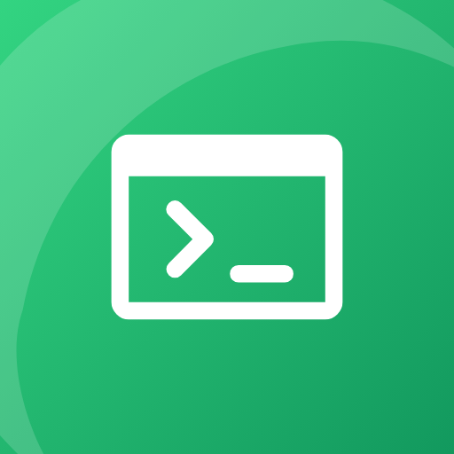

ConchLast updated: 2026-11-01 · Publisher: ZenTao Studio
Conch is an SSH terminal and SFTP client. Short version: Conch collects nothing about you. It has no account, no ads, no analytics and no crash-reporting SDKs.
Conch only opens connections that you ask for:
Zentao Studio runs no servers that Conch talks to and receives none of this traffic.
Your hosts, keys, passwords, passphrases, snippets, trusted server fingerprints and settings. Passwords, private keys and passphrases are encrypted with a key held by the Android Keystore. All of it is excluded from Android cloud backup. It leaves the phone only if you export a backup file yourself; that file is encrypted with a password you choose, and Zentao Studio never sees it. Uninstalling Conch removes its private local data. Files explicitly exported remain at their chosen locations.
Session recovery stores host references and a tmux session name, not terminal output or typed commands. After a process restart, you choose whether to reconnect.
The transfer queue stores the source/destination paths, selected file URIs, progress and error
state. Uploads may be staged as private local copies; downloads use private temporary files
before saving to the location you chose. Interrupted copies remain available for retry until
you dismiss the job or uninstall the app. Completed staging files are removed. Android may
retain the file access permission you granted so a transfer can be retried. Interrupted uploads
may leave a hidden .conch-…part file in the selected remote folder until successfully resumed.
Optional app lock uses Android's device credential confirmation and blocks app screenshots. It protects access to the interface; it does not turn imported SSH keys into hardware-backed signing keys. Your selected keyboard may provide dictation or suggestions under its own privacy policy; Conch does not run a speech or hosted AI service.
Remote editor drafts and their original bytes for conflict checks are encrypted locally with an Android Keystore AES-GCM key, outside Android and exported backups. Up to 32 drafts are retained until you save to the server or explicitly discard them; each edited document is limited to 512 KiB of UTF-8. Recovery is bound to its saved host and server/account and never uploads automatically. Edits newer than the last completed local save may be lost if the process is killed. Composer drafts remain in memory only. The Settings draft manager retains access to drafts from deleted hosts. Explicit text export creates an unencrypted copy at the chosen location; discarding removes only the local recovery copy.
Conch Pro is bought through Google Play. Google processes the payment under its own privacy policy; Conch only learns whether the purchase exists.
Conch is a tool for administering servers and is not directed at children.
zentaostudio@gmail.com
ZenTao Studio · Tools that just work.